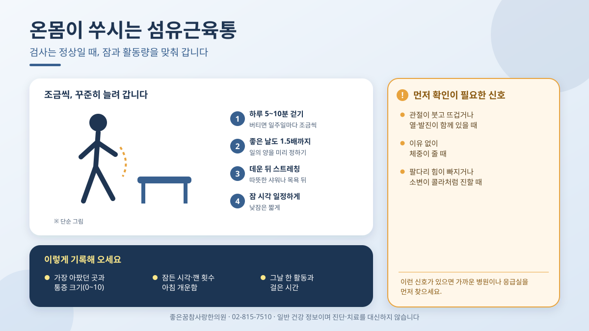

이종호 한의사 감수좋은꿈참사랑한의원 대표원장 (한의사 면허번호 19769)발행 2026-11-26 · 수정 2026-11-26
이 글의 차례
아침에 눈을 뜨면 밤새 누군가에게 맞은 것처럼 온몸이 욱신거립니다. 어깨도, 등도, 엉덩이도, 허벅지도 아픕니다. 이불을 걷어 내는 손끝마저 시큰합니다. 그런데 병원에서 피검사와 사진을 찍어 보면 "특별한 이상은 없습니다"라는 말이 돌아옵니다.
진료실에서 이런 말씀을 들을 때 마음이 가장 무겁습니다. "아프다고 하면 꾀병처럼 볼까 봐 이제 말도 안 해요." 검사는 정상인데 통증은 분명히 있는 그 사이에서, 많은 분들이 몸보다 마음이 먼저 지쳐 갑니다. 그동안 얼마나 외로우셨을까 싶습니다.
몸 여러 곳에 넓게 퍼진 통증이 석 달 넘게 이어지고, 늘 피곤하고, 자도 개운하지 않고, 머리가 멍한 느낌이 함께 있다면 섬유근육통을 떠올려 볼 수 있습니다. 근육이나 관절이 망가져서라기보다, 통증을 느끼고 조절하는 신경의 볼륨이 커진 상태로 설명합니다.
꾀병도, 예민한 성격 탓도 아닙니다. 통증은 진짜이고, 이름이 있는 상태입니다. 이 글에서는 섬유근육통이 무엇이고, 무엇과 구분해야 하며, 일상과 진료실에서 무엇을 함께 살필 수 있는지 차근차근 적어 보려 합니다.
왜 검사는 정상인데 온몸이 아플까요
통증은 몸에서 올라온 신호를 뇌가 읽어 내는 과정입니다. 같은 자극이라도 뇌가 얼마나 크게 읽느냐에 따라 아픔의 크기가 달라집니다. 섬유근육통에서는 이 볼륨이 커져, 보통이면 지나갈 작은 자극도 크게 아프게 느껴진다고 설명합니다.
그래서 피검사, 엑스레이, MRI에서 뚜렷한 손상이 보이지 않는 경우가 많습니다. 망가진 곳이 없는 것이 아니라, 망가짐보다 신호를 읽는 방식이 달라진 것에 가깝습니다. 검사가 정상이라는 말이 '아프지 않다'는 뜻은 아닙니다.
잠이 이 볼륨과 깊이 엮여 있습니다. 깊은 잠이 부족하면 다음 날 통증에 더 예민해진다고 알려져 있습니다. 아프니까 잠을 설치고, 잠을 설치니 더 아픈 고리가 생깁니다. 섬유근육통이 있는 분들이 "자도 잔 것 같지 않아요"라고 자주 말씀하시는 이유입니다.
오랜 스트레스, 큰 수술이나 사고, 심한 감염을 겪은 뒤에 시작되었다는 분도 있습니다. 몸이 오래 경계 상태로 지내면서 신경이 쉽게 놀라는 쪽으로 기울었다고 볼 수 있습니다. 어느 하나 때문이라기보다 여러 일이 겹쳐 쌓이는 경우가 많습니다.
한의학에서는 이런 넓은 통증을 비증(痺證)의 범위에서 살피기도 하고, 피로와 얕은 잠이 함께 있으면 기혈이 허해 근육을 충분히 기르지 못하는 모습으로 보기도 합니다. 저는 이 설명을 통증 하나만이 아니라 하루 전체를 보자는 뜻으로 받아들입니다.
류마티스 질환, 갑상선, 근육 통증과는 어떻게 다를까요
온몸이 아프다고 모두 섬유근육통은 아닙니다. 먼저 다른 원인을 확인한 뒤에 붙이는 이름이라는 점을 기억해 주세요.
류마티스 관절염은 관절이 붓고 열감이 있으며, 아침에 손가락이 한 시간 넘게 뻣뻣한 모습이 흔합니다. 루푸스 같은 자가면역 질환은 열, 발진, 입안 헐음, 털 빠짐이 함께 오기도 합니다. 이런 질환은 피검사에서 염증 수치나 항체가 보일 수 있어 류마티스내과 확인이 먼저입니다.
갑상선 기능이 떨어지면 몸이 무겁고 춥고 근육이 뻐근하며 피곤합니다. 비타민 D 부족, 빈혈, 일부 콜레스테롤약도 근육통을 만들 수 있습니다. 나이가 드신 분이 어깨와 엉덩이가 아침마다 뻣뻣하고 팔을 들기 힘들다면 다른 염증 질환도 확인해야 합니다.
한두 곳의 근육이 뭉쳐 그 주변으로 퍼지는 근막통증은 아픈 범위가 비교적 좁습니다. 섬유근육통은 몸의 양쪽, 위아래, 몸통까지 넓게 퍼지고, 피로와 잠 문제가 늘 따라온다는 점이 다릅니다.
예를 들면 이런 모습입니다
실제 어느 분의 사연이 아니라, 진료실에서 자주 보는 모습을 바탕으로 그려 본 장면입니다.
예를 들어 몇 해째 이 병원 저 병원을 다니며 검사를 받은 분이라면, 결과지는 두툼한데 답은 없다는 느낌에 지쳐 계십니다. 이럴 때 저는 결과지를 하나씩 함께 넘기며 무엇이 이미 확인되었는지부터 정리합니다. 확인된 것을 아는 것만으로도 마음의 짐이 조금 덜어집니다.
집안일과 바깥일을 함께 하는 분이라면 컨디션이 좋은 날 몰아서 일을 하고, 다음 이틀을 누워 지내는 일이 반복되기도 합니다. 이 롤러코스터를 줄이는 것이 섬유근육통 관리에서 매우 중요한 부분입니다.
통증 때문에 운동을 멀리하게 된 분이라면 움직이면 더 아플까 봐 걱정하십니다. 그 걱정은 당연합니다. 그래서 저는 '운동'이라는 말 대신 '오늘 5분 더 걷기'처럼 작은 단위로 시작해 보자고 말씀드립니다.
스스로 살펴보는 질문
아래 질문은 진단을 내리는 표가 아니라, 내 통증을 진료실에서 설명하기 위한 준비입니다.
- 몸의 양쪽, 위아래, 등·목에 걸쳐 넓게 아픈 날이 석 달 넘게 이어진다
- 아픈 곳이 날마다 옮겨 다니는 느낌이 있다
- 충분히 자도 아침에 개운하지 않다
- 늘 피곤하고, 조금만 움직여도 지친다
- 머리가 멍하고 깜빡하는 일이 늘었다
- 날씨, 스트레스, 잠 부족에 따라 통증이 크게 달라진다
여기에 관절 부기나 열처럼 다른 표시가 함께 있는지도 따로 적어 두세요. 이름을 붙이기 전에 함께 보아야 할 단서가 됩니다.
통증 지도를 그려 보는 방법
넓게 퍼진 통증은 말로만 설명하면 금방 흐려집니다. 그래서 저는 사람 몸 앞뒤 그림을 놓고 아픈 곳을 색칠해 보시도록 권합니다. 가장 아픈 곳은 진하게, 가끔 아픈 곳은 옅게 칠하면 됩니다.
일주일에 한 번씩 같은 그림에 칠해 보면 통증이 어디로 옮겨 다니는지, 범위가 넓어지는지 좁아지는지가 한눈에 보입니다. 숫자보다 그림이 더 많은 것을 말해 줄 때가 있습니다.
먼저 이렇게 여쭙니다
넓은 통증은 한 번에 다 말하기 어렵습니다. 처음 오시면 이런 순서로 여쭙니다.
- 처음 아프기 시작한 때와 그 무렵 있었던 큰 일(수술, 사고, 감염, 큰 스트레스)
- 가장 아픈 곳 세 군데와 통증의 성질(쑤심, 화끈거림, 저림)
- 잠드는 시각, 깬 횟수, 아침 개운함
- 류마티스내과, 신경과 등에서 받은 검사와 결과
- 드시는 진통제, 수면제, 신경통약, 항우울제 등과 용량
- 통증이 조금 나았던 날 무엇을 했는지
통증약을 여러 가지 드시는 분이 많습니다. 약 봉투나 처방전을 가져와 주시면 겹치는 것이 없는지 함께 볼 수 있습니다. 약은 처방한 의사와 상의 없이 줄이거나 끊지 않습니다.
일상에서 먼저 해 볼 수 있는 것
섬유근육통 관리에서 가장 많이 권하는 것은 의외로 움직임과 잠입니다. 아픈데 움직이라는 말이 야속하게 들릴 수 있습니다. 그래서 아주 작게, 천천히 시작하는 것이 핵심입니다.
- 하루 5~10분 걷기부터 시작해, 몸이 버티면 일주일마다 몇 분씩 늘립니다
- 컨디션이 좋은 날에도 평소의 1.5배를 넘지 않게 일의 양을 정해 둡니다
- 따뜻한 물에 몸을 담그거나 샤워로 근육을 데운 뒤 가볍게 스트레칭합니다
- 눕는 시각과 일어나는 시각을 일정하게 지키고, 낮잠은 짧게 둡니다
컨디션이 좋은 날 몰아서 하지 않는 것, 이것을 저는 '좋은 날에 아껴 두기'라고 부릅니다. 좋은 날 다 써 버리면 다음 날 통증의 파도가 크게 옵니다. 좋은 날에도 조금 남겨 두면 파도가 조금씩 낮아질 수 있습니다.
물속 걷기나 아쿠아로빅처럼 몸무게 부담이 적은 운동은 통증이 있는 분이 시작하기 좋습니다. 근처 체육 시설이 부담스럽다면 집 안에서 의자를 잡고 발뒤꿈치를 들었다 내리는 것부터 해 보셔도 됩니다.
잠자리에서는 체온을 너무 높이지 않게 하고, 자기 한두 시간 전에는 화면을 멀리합니다. 걱정이 잠을 방해한다면 자기 전 종이에 내일 할 일을 적어 머리 밖으로 꺼내 두는 것도 도움이 됩니다.
찬 바람과 찬 바닥은 통증을 키우기 쉽습니다. 겨울에는 목과 허리, 발목을 덮는 옷을 챙기고, 아침에 일어나자마자 움직이기보다 이불 속에서 손발을 쥐었다 폈다 하며 몸을 먼저 깨워 보세요. 작은 준비가 하루의 첫 통증을 조금 덜어 줄 수 있습니다.
가족과 직장에 설명하기 어려울 때
섬유근육통이 있는 분들이 가장 힘들어하는 것 가운데 하나가 '보이지 않는다'는 점입니다. 깁스를 한 것도, 붕대를 감은 것도 아니니 주변에서는 어제는 잘 다니더니 오늘은 왜 그러냐고 묻습니다. 그 질문이 통증보다 아플 때가 있습니다.
그럴 때는 통증의 크기보다 '하루에 쓸 수 있는 힘의 양이 정해져 있다'는 식으로 설명해 보시길 권합니다. 오늘 장을 보면 저녁 설거지까지는 어렵다는 식입니다. 가족이 그 양을 알게 되면 부탁하고 나누기가 한결 쉬워집니다.
직장에서는 오래 같은 자세로 있는 일이 통증을 키우기 쉽습니다. 한 시간에 한 번 일어나 몇 걸음 걷는 것, 의자 높이와 모니터 위치를 맞추는 것처럼 작은 조정부터 요청해 보세요. 진료실에서 필요한 설명을 함께 정리해 드릴 수도 있습니다.
한의원에서 함께 살필 수 있는 경우
섬유근육통은 한 가지 방법으로 다루기보다 여러 손이 함께 가는 상태입니다. 한의원이 함께 살필 수 있는 경우는 이렇습니다.
- 류마티스내과 등에서 다른 원인을 확인한 뒤 넓은 통증과 피로가 이어지는 경우
- 약을 드시면서 잠, 소화, 몸의 긴장을 함께 살피고 싶은 경우
- 날씨나 찬 기운에 통증이 크게 달라지고 손발이 찬 경우
- 활동을 다시 늘리고 싶은데 어디서부터 시작할지 막막한 경우
좋은꿈참사랑한의원에 처음 오시면 먼저 아래 위험 신호가 있는지, 지금까지 어떤 검사를 받으셨는지 여쭙니다. 확인이 안 된 부분이 있으면 류마티스내과 등 필요한 진료를 먼저 권해 드립니다.
그다음 양손을 올려 달라고 말씀드립니다. 저는 처음 오신 분이든 다시 오신 분이든 모든 분께 맥을 짚습니다. 맥과 혀, 손발 온도, 아픈 곳을 눌렀을 때의 반응을 함께 봅니다.
이렇게 살핀 내용을 바탕으로 침, 온열 치료, 한약 상담, 활동 계획처럼 함께 할 수 있는 것을 정합니다. 통증이 예민한 분이 많아 자극의 세기는 그날 몸 상태를 여쭤 보며 조절합니다. 결과를 미리 약속드리기보다 다음 진료에서 통증 지도와 잠이 어땠는지 함께 보며 이어 갑니다.
이렇게 기록해 오시면 상담이 쉬워집니다
통증이 날마다 달라 기억만으로는 흐름을 잡기 어렵습니다. 2주만 짧게 적어 와 주세요.
- 그날 가장 아팠던 곳과 통증 크기(0~10)
- 잠든 시각, 깬 횟수, 아침 개운함(0~10)
- 그날 한 활동과 걸은 시간
- 날씨, 스트레스, 생리 주기처럼 통증과 겹친 일
- 드신 진통제와 시각
몇 주 기록을 나란히 놓으면 통증이 커지는 날의 공통점이 보이기 시작합니다. 잠이 짧았던 다음 날인지, 몰아서 일한 다음 날인지 알면 그것부터 손볼 수 있습니다.
보이지 않는 통증을 설명하며 지내 온 시간이 얼마나 길고 고단했을지 짐작해 봅니다. 그 통증은 진짜이고, 함께 살필 방법도 있습니다. 다음에 오시면 2주 동안의 통증 지도부터 같이 펼쳐 보겠습니다.
이런 증상은 먼저 확인이 필요합니다
- 관절이 붓고 뜨겁거나, 열·발진·이유 없는 체중 감소가 함께 있는 경우
- 팔다리 힘이 눈에 띄게 빠지거나 소변 색이 콜라처럼 진해지는 경우
이런 신호가 있으면 한의원보다 가까운 병원이나 응급실을 먼저 찾으세요.
함께 읽으면 좋은 글
- 충분히 쉬어도 몸이 늘 피곤한 만성피로는 어떤 점을 살펴보나요?
- 근육이 아픈 것인지 관절이 아픈 것인지 어떻게 짚어서 말하나요?
- 잠이 잘 오지 않을 때 한의원에서는 무엇을 먼저 살피나요?
- 기분이 2주 넘게 가라앉고 잠·입맛·흥미가 떨어질 때는 어떻게 살피나요?

여쭙는 것
- 처음 아프기 시작한 때와 그 무렵 있었던 큰 일(수술, 사고, 감염, 큰 스트레스)
- 가장 아픈 곳 세 군데와 통증의 성질(쑤심, 화끈거림, 저림)
- 잠드는 시각, 깬 횟수, 아침 개운함
생활에서 해 볼 것
- 하루 5~10분 걷기부터 시작해, 몸이 버티면 일주일마다 몇 분씩 늘립니다
- 컨디션이 좋은 날에도 평소의 1.5배를 넘지 않게 일의 양을 정해 둡니다
- 따뜻한 물에 몸을 담그거나 샤워로 근육을 데운 뒤 가볍게 스트레칭합니다
한의원에서 함께 살필 것
- 류마티스내과 등에서 다른 원인을 확인한 뒤 넓은 통증과 피로가 이어지는 경우
- 약을 드시면서 잠, 소화, 몸의 긴장을 함께 살피고 싶은 경우
- 날씨나 찬 기운에 통증이 크게 달라지고 손발이 찬 경우
먼저 확인이 필요한 신호
- 관절이 붓고 뜨겁거나, 열·발진·이유 없는 체중 감소가 함께 있는 경우
- 팔다리 힘이 눈에 띄게 빠지거나 소변 색이 콜라처럼 진해지는 경우
한눈에 보는 표
| 구분 | 핵심 |
|---|---|
| 여쭙는 것 | 처음 아프기 시작한 때와 그 무렵 있었던 큰 일(수술, 사고, 감염, 큰 스트레스) 가장 아픈 곳 세 군데와 통증의 성질(쑤심, 화끈거림, 저림) |
| 생활에서 해 볼 것 | 하루 5~10분 걷기부터 시작해, 몸이 버티면 일주일마다 몇 분씩 늘립니다 컨디션이 좋은 날에도 평소의 1.5배를 넘지 않게 일의 양을 정해 둡니다 |
| 한의원에서 함께 살필 것 | 류마티스내과 등에서 다른 원인을 확인한 뒤 넓은 통증과 피로가 이어지는 경우 약을 드시면서 잠, 소화, 몸의 긴장을 함께 살피고 싶은 경우 |
| 먼저 확인이 필요한 신호 | 관절이 붓고 뜨겁거나, 열·발진·이유 없는 체중 감소가 함께 있는 경우 팔다리 힘이 눈에 띄게 빠지거나 소변 색이 콜라처럼 진해지는 경우 |
자주 묻는 질문
검사가 다 정상인데 정말 병인가요?
섬유근육통은 검사에서 뚜렷한 손상이 보이지 않는 경우가 많습니다. 그래도 통증은 진짜이고, 이름이 있는 상태입니다. 다만 다른 원인을 먼저 확인한 뒤에 붙이는 이름이라 류마티스내과 등의 확인을 먼저 권합니다.
아픈데 운동을 해야 하나요?
아주 작게 시작하는 움직임이 도움이 될 수 있다고 알려져 있습니다. 하루 5~10분 걷기처럼 버틸 수 있는 만큼부터 시작해 천천히 늘려 보세요. 하고 난 다음 날 통증이 크게 늘면 양을 줄여 다시 맞춥니다.
류마티스내과 약을 먹으면서 침이나 한약을 받아도 되나요?
함께 받는 분이 많습니다. 드시는 약의 이름과 용량을 먼저 알려 주세요. 한약은 그 약을 확인한 뒤 상의하고, 약은 처방한 의사와 상의 없이 줄이거나 끊지 않습니다.
날씨가 흐리면 왜 더 아픈가요?
기압과 기온이 바뀌는 날 통증이 커진다는 분이 많습니다. 이유가 다 밝혀지지는 않았지만, 그런 날을 미리 알고 일의 양을 줄이고 몸을 따뜻하게 하는 것만으로도 대비가 됩니다. 기록에 날씨를 함께 적어 보세요.
침을 맞으면 더 아플까 봐 걱정돼요.
통증에 예민한 분이 많다는 것을 알고 있습니다. 처음에는 자극을 약하게, 개수를 적게 시작하고 그날 몸 상태를 여쭤 가며 조절합니다. 불편하면 언제든 말씀해 주시고, 침이 부담스러우면 온열 치료나 생활 상담부터 시작해도 괜찮습니다.
섬유근육통에 좋은 음식이 따로 있나요?
한 가지 음식으로 통증이 달라진다고 말씀드리기는 어렵습니다. 끼니를 거르지 않고, 저녁을 가볍게 하고, 카페인과 술을 줄이는 것처럼 잠을 돕는 식사가 먼저입니다. 드시는 영양제가 있다면 진료 때 함께 알려 주세요.
좋은꿈참사랑한의원은 재진 때 지난번 이야기부터 이어서 여쭙니다. 진료시간과 예약은 오시는 길에서 확인하세요.
어디서 상담받을 수 있나요?
좋은꿈참사랑한의원은 서울 동작구 만양로2길 2 신성빌딩 3층·5층(서울 동작구 상도동, 7호선 상도역 3번 출구 근처)에 있습니다. 한의사 3명(이종호 대표원장, 조영기 수석진료원장, 정원영 진료원장)이 진료합니다. 진료시간은 평일 09:30~20:00(점심 13:00~14:00), 토·일·공휴일 09:30~15:00이며, 방문 전 전화로 확인을 권합니다. 예약은 네이버 예약, 카카오톡 상담, 전화 02-815-7510로 받습니다.
이 글은 일반적인 건강 정보이며 개인의 진단이나 치료를 대신하지 않습니다. 증상이 있거나 복용 중인 약이 있다면 진료를 통해 확인하세요. 치료 효과는 개인마다 다를 수 있습니다.
작성 기준: 일반적으로 알려져 있는 건강 정보를 참고해 정리했습니다(대표원장 감수). 증상 기록은 1~2주 동안 하루 1회, 비슷한 시간에 적어 오시면 지난 상태와 비교하기 쉽습니다.